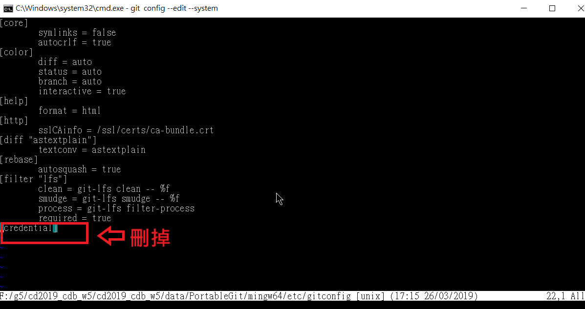
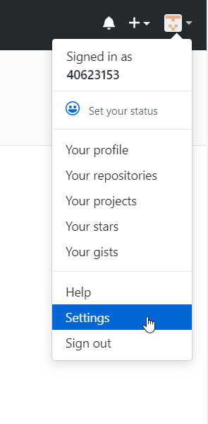
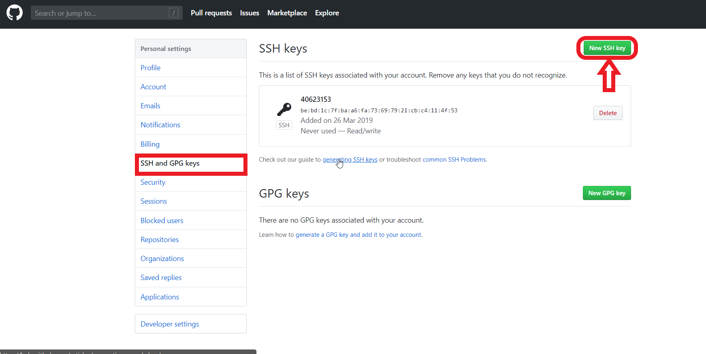

關閉彈出的登入窗
開啟start.bat後輸入 git config --edit --system
開啟編輯器，編輯git的設定
使用按鍵H/J/K/L控制方向，之後按a進入編輯模式
就可以按Backspace刪除最後一行
如下

刪除後按Esc鍵離開編輯模式
輸入2個冒號後，再輸入wq存檔並關閉即可
直接離開則輸入exit即可退出
在可攜系統的程式視窗輸入sh (可至y:\git\bin中確認)
執行 git 的 shell並輸入(ssh-keygen -t rsa -b 4096 -C "This is my key")
將會建立Private 與 Public金鑰至y:\home\.ssh\id_rsa與id_rsa.pub將 id_rsa.pub 的內容複製貼上至Github 帳號的Settings
如下

在SSH and GPG keys的SSH Key點擊new ssh key並貼上所複製的的內容

利用ssh提交推送
首先要確認倉儲是以ssh的方式clone
利用以下指令clone
git clone git@github.com:(mdekmol/github分組網址)
或直接使用SciTE編輯器開啟個人倉儲的.git檔案裡面的config檔案
把url = https://github.com/(mdekmol/github分組網址)
改成url = git@github.com:(mdekmol/github分組網址)
完成後直接提交推送即可不用打帳號密碼就能push。